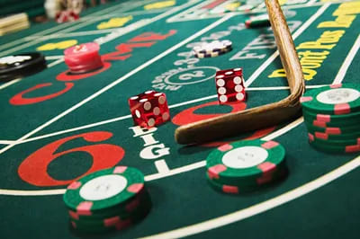

Full Advantage Investments Limited
the secret to winning is responsible gaming.
WHAT IS PROBLEM GAMBLING?

PROBLEM GAMBLING is an urge to continuously gamble despite harmful negative consequences or a desire to stop. It is
often defined by whether harm is experienced by the gambler or others, rather than by the gambler’s behavior. A gambling
behavior that causes disruptions in any major area of life: psychological, physical, social, or vocational.
POSSIBLE SIGN THAT SOMEONE IS EXPERIENCING GAMBLING DISORDER
A person may be experiencing a gambling disorder if the person:
- Needs to gamble with increasing amounts of money to achieve the desired excitement;
- Feels restless or irritable when attempting to cut down or stop gambling;
- Has made repeated unsuccessful efforts to control, cut back or stop gambling;
- Is often preoccupied with gambling (e.g., reliving past gambling experiences, planning the next venture, or thinking of ways to get money with which to gamble);
- Often gambles when feeling distressed (e.g., helpless, guilty, anxious, or depressed);
- After losing money gambling, often returns another day to get even (“chasing” one’s losses)
- Lies to conceal the extent of involvement with gambling;
- Has jeopardized or lost a significant relationship, job, or educational or career opportunity because of gambling; or
- Relies on others to provide money to relieve desperate financial situations caused by gambling.
RESPONSIBLE GAMING PROGRAM
Full Advantage Investments Limited (the “Company”) fully believes in the paramount importance of responsible gaming in
protecting the interests of its gaming customers. For this purpose, the Company hereby provides its responsible gaming
program for the benefit of its players and the industry as a whole.
WHY LOOK OUT FOR PROBLEM GAMBLING?
The importance of acknowledging and recognizing the signs of a gambling disorder is not only for the betterment of the
person experiencing the challenges but also the friends and family of said person. Excessive gambling affects various
aspects of life, including but not limited to the person’s emotional, financial, and physical well-being. Moreover, said
challenges may also apply to family members and friends of the person who may be experiencing such difficulty.
PLAYER RESTRICTIONS
The following persons are not allowed to engage in any gambling activity, and as such, are prohibited from registering
with the Company’s gaming activities, promotions, or offers:
- Persons under twenty-one (21) years of age or students of any school, college, or university in the Philippines;
- Government officials connected directly with the operation of the Government or any of its agencies; and
- Members of the Armed Forces of the Philippines, including the Army, Navy, Air Force, or Constabulary.